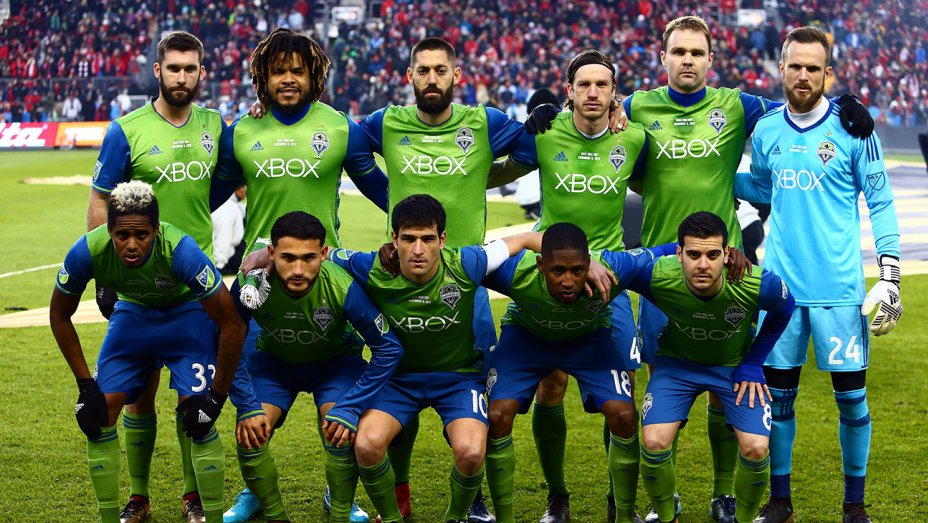

Seattle Sounders FC is an American professional soccer club based in Seattle, Washington. The Sounders compete as a member of the Western Conference of Major League Soccer (MLS). The club was established on November 13, 2007, and began play in 2009 as an MLS expansion team. The Sounders are a phoenix club, carrying the same name as the original franchise that competed in the North American Soccer League from 1974 to 1983.
The club's majority owner is Adrian Hanauer, and its minority owners are the estate of Paul Allen, Drew Carey, and 11 families from the Seattle area. Former USL Sounders coach and assistant coach Brian Schmetzer took over as head coach in July 2016 after the departure of Sigi Schmid. The Sounders play their home league matches at CenturyLink Field, with a reduced capacity of 37,722 seats for most matches. Along with several organized groups, a 53-member marching band called 'Sound Wave' supports the club at each home match. Seattle competes with rival MLS clubs Portland and Vancouver for the Cascadia Cup.